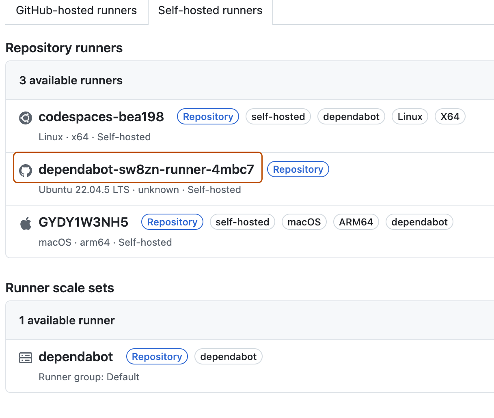

Setting up Dependabot to run on self-hosted action runners using the Actions Runner Controller
You can configure the Actions Runner Controller to run Dependabot on self-hosted runners.
Working with the Actions Runner Controller (ARC)
This article provides step-by-step instructions for setting up ARC on a Kubernetes cluster and configuring Dependabot to run on self-hosted action runners. The article:
Contains an overview of the ARC and Dependabot integration.
Provides detailed installation and configuration steps using helm scripts.
What is ARC?
The Actions Runner Controller is a Kubernetes controller that manages self-hosted GitHub Actions as Kubernetes pods. It allows you to dynamically scale and orchestrate runners based on your workflows, providing better resource utilization and integration with Kubernetes environments. See Actions Runner Controller.
Dependabot on ARC
You can run Dependabot on self-hosted GitHub Actions runners managed within a Kubernetes cluster via ARC. This enables auto-scaling, workload isolation, and better resource management for Dependabot jobs, ensuring that dependency updates can run efficiently within an organization's controlled infrastructure while integrating seamlessly with GitHub Actions.
Setting up ARC for Dependabot on your Local environment
Prerequisites
A Kubernetes cluster
For a managed cloud environment, you can use Azure Kubernetes Service (AKS).
The installation name of the runner scale set has to be dependabot in order to target the dependabot job to the runner.
The containerMode.type="dind" configuration is required to allow the runner to connect to the Docker daemon.
If an organization-level or enterprise-level runner is created, then the appropriate scopes should be provided to the Personal Access Token (PAT).
A personal access token (classic) (PAT) can be created. The token should have the following scopes based on whether you are creating a repository, organization or enterprise level runner scale set.
Runner groups are used to control which organizations or repositories have access to runner scale sets. To add a runner scale set to a runner group, you must already have a runner group created.
Don't forget to add the following setting to the runner scale set configuration in the helm chart.
--set runnerGroup="<Runner group name>" \
Checking your installation
Check your installation.
helm list -A
Output:
➜ ARC git:(master) ✗ helm list -A
NAME NAMESPACE REVISION UPDATED STATUS CHART APP VERSION
arc arc-systems 1 2025-04-11 14:41:53.70893 -0500 CDT deployed gha-runner-scale-set-controller-0.11.0 0.11.0
arc-runner-set arc-runners 1 2025-04-11 15:08:12.58119 -0500 CDT deployed gha-runner-scale-set-0.11.0 0.11.0
dependabot arc-runners 1 2025-04-16 21:53:40.080772 -0500 CDT deployed gha-runner-scale-set-0.11.0
Check the manager pod using this command.
kubectl get pods -n arc-systems
Output:
➜ ARC git:(master) ✗ kubectl get pods -n arc-systems
NAME READY STATUS RESTARTS AGE
arc-gha-rs-controller-57c67d4c7-zjmw2 1/1 Running 8 (36h ago) 6d9h
arc-runner-set-754b578d-listener 1/1 Running 0 11h
dependabot-754b578d-listener 1/1 Running 0 14h
Setting up Dependabot
On GitHub, navigate to the main page of the repository.
Under your repository name, click Settings. If you cannot see the "Settings" tab, select the dropdown menu, then click Settings.
In the "Security" section of the sidebar, click Advanced Security.
Under "Dependabot", scroll to "Dependabot on Action Runners", and select Enable for "Dependabot on self-hosted runners".
Triggering a Dependabot run
Now that you've set up ARC, you can start a Dependabot run.
On GitHub, navigate to the main page of the repository.
Under your repository name, click the Insights tab.
In the left sidebar, click Dependency graph.
Under "Dependency graph", click Dependabot.
To the right of the name of manifest file you're interested in, click Recent update jobs.
If there are no recent update jobs for the manifest file, click Check for updates to re-run a Dependabot version updates'job and check for new updates to dependencies for that ecosystem.
Viewing the generated ARC runners
You can view the ARC runners that have been created for the Dependabot job.
On GitHub, navigate to the main page of the repository.
Under your repository name, click Actions.
On the left sidebar, click Runners.
Under "Runners", click Self-hosted runners to view the list of all the runners available in the repository. You can see the ephemeral dependabot runner that has been created.

You can also view the same dependabot runner pod created in your kubernetes cluster from the terminal by executing this command.
➜ ARC git:(master) ✗ kubectl get pods -n arc-runners
NAME READY STATUS RESTARTS AGE
dependabot-sw8zn-runner-4mbc7 2/2 Running 0 46s